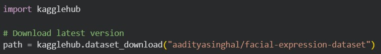
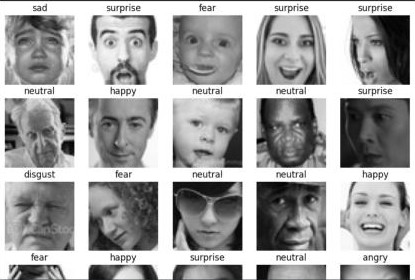
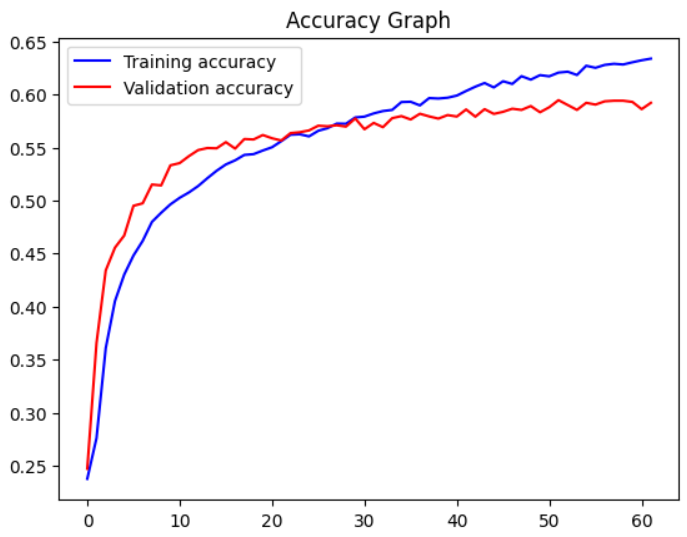
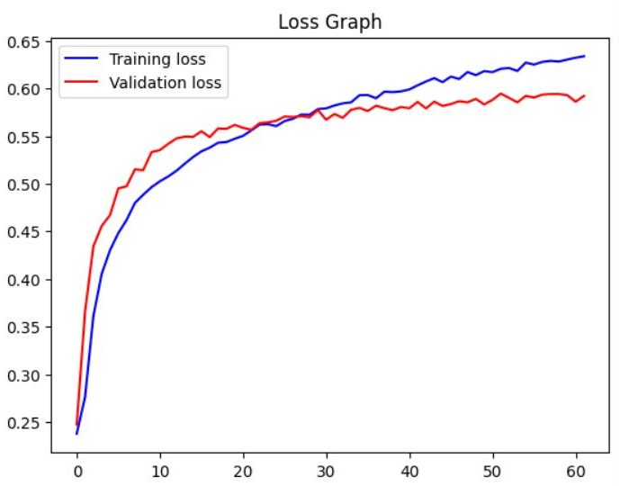
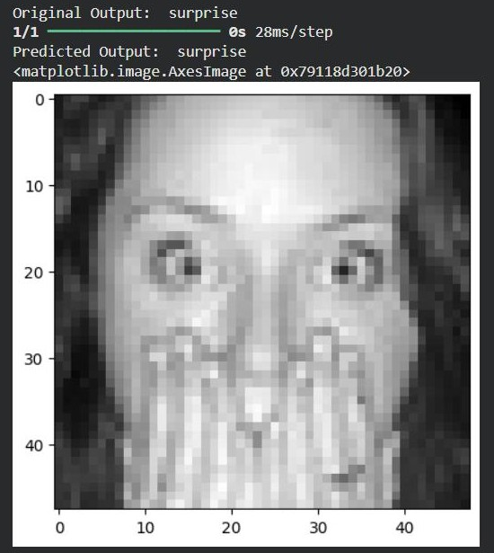
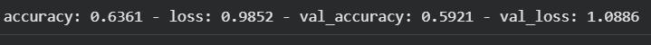

← Go Back
Facial Emotion Recognition using CNN
Data Loading and Exploration
- Dataset: The dataset used is the "Facial Expression Dataset" from Kaggle. It contains images of faces labeled with different emotions (angry, disgust, fear, happy, neutral, sad, surprise).
- Loading: The
kagglehub library is used to download the dataset. The load_dataset function reads the image paths and corresponding labels from the train and test directories.
- DataFrames: The loaded data is stored in pandas DataFrames for easy manipulation and analysis.
- Exploration: We visualize the distribution of emotions in the training set using a countplot and display sample images to understand the data.

Feature Extraction and Preprocessing
- Feature Extraction: The
extract_features function reads the images, converts them to grayscale, and stores them as NumPy arrays. The images are resized to 48x48 pixels.
- Normalization: The pixel values are normalized by dividing by 255.0 to scale them between 0 and 1. This helps in faster and better convergence of the model.
- Label Encoding: The categorical emotion labels (strings) are converted into numerical representations using
LabelEncoder.
- One-Hot Encoding: The numerical labels are then converted into one-hot encoded vectors. This is required for the categorical crossentropy loss function used in the model.

Model Creation and Training
- Model Architecture: A Sequential CNN model is built with multiple convolutional layers, max-pooling layers, and dropout layers.
- Convolutional Layers: Extract features from the images by applying filters.
- Max-Pooling Layers: Reduce the spatial dimensions of the output from convolutional layers, helping to reduce the number of parameters and computation.
- Dropout Layers: Randomly set a fraction of input units to 0 at each update during training, which helps prevent overfitting.
- Flatten Layer: Flattens the output from the convolutional layers into a 1D vector to be fed into the fully connected layers.
- Dense Layers: Fully connected layers that perform the classification.
- Output Layer: A dense layer with a softmax activation function that outputs the probabilities for each emotion class.
- Compilation: The model is compiled with the Adam optimizer, categorical crossentropy loss function, and accuracy as the evaluation metric.
- Early Stopping: An EarlyStopping callback is used to stop training when the validation loss stops improving for a certain number of epochs, preventing overfitting.
- Training: The model is trained using the
fit method, providing the training data, batch size, number of epochs, and validation data.


Model Evaluation and Testing
- Plotting Results: The training and validation accuracy and loss are plotted over epochs to visualize the model's performance and check for overfitting.
- Testing with Image Data: A random image from the test set is selected, and the model predicts its emotion. The predicted label is compared with the original label, and the image is displayed.
- Saving the Model: The trained model is saved for future use.

Conclusion
- Accuracy: The model achieved an accuracy of around 64% on the test set.
- Overfitting: The model showed signs of overfitting, as the training accuracy was much higher than the validation accuracy. This could be due to the small size of the dataset and the complexity of the model.
- Future Improvements: The model could be improved by using a larger dataset, more complex model architecture, and more data augmentation techniques and with a live camera input.

Project link